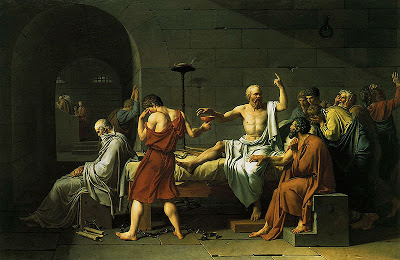
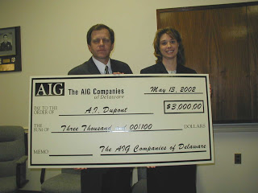

Proving his antagonist's point? Socrates insisted that justice was something other than the "advantage of the stronger" -- yet he submitted to an unjust death sentence, thereby apparently validating the idea that citizens have a moral responsibility to submit to officially sanctioned injustice.
"Justice is merely the advantage of the stronger.... Injustice, if it is on a large enough scale, is stronger, firmer, and more masterful than justice."
Thrasymachus the Sophist, as quoted in Plato's Republic (book I).
Accompanied by the familiar fanfare of self-congratulation, the FBI recently arrested four members of the "sovereign citizen" movement in last Vegas.
These were not garden-variety "anti-government extremists," insisted the Bureau; rather, they were a cell of ruthless, heavily armed "paper terrorists" who committed various kinds of financial fraud involving "fictitious obligations" in order to discharge personal debts.
Most people have never heard of "paper terrorism," a concept invented a little more than a decade ago by federal prosecutors and their enablers in so-called "watchdog" groups (most prominently the Southern Poverty Law Center, a litigation-fueled, self-sustaining scam run by racial ambulance chaser and alleged pervert Morris Dees).
"Paper terrorism" occurs anytime a "public servant" -- that is, a tax-supported parasite employed by one of the state's instruments of extraction, suppression, or punitive violence -- finds himself dealing with the inconvenience of a bogus property lien or phony civil judgment.
This is a tactic frequently used by people commonly called "anti-government extremists" but who are actually very talented at mimicking the government's criminal behavior in pursuit of their private interests.
Ersatz legal documents filed by adherents of "Sovereign Citizen" and "Common Law" movements hardly qualify as weapons of mass destruction; they're more like low-yield instruments of particularized harassment. Any trouble they cause results from a form of gullibility to which government employees are particularly susceptible -- namely, the Vogon-like tendency to take at face value any piece of paper embossed with official-looking insignia and cluttered with impenetrable legal prose.
This is a perfect example of the kind of opportunistic fraud that is the inevitable by-product of omnivorous government. Were it not for the fact that government emits an endless blizzard of paper intended to do exactly the same kind of thing that "paper terrorists" are attempting -- that is, to confiscate earnings or property for punitive purposes -- the scam run by the latter wouldn't work. As it is, however, the bogus legal paperwork is sometimes scooped up without a second thought, as if it were so much white confetti in a snowdrift.
Nor is this the only way in which some self-designated "Sovereign Citizen" activists flatter our rulers by earnestly imitating their criminal behavior. Quite frequently the practitioners of "paper terrorism" pursue other scams involving phony cashier's checks and other spurious financial instruments -- a parallel we'll examine in greater detail anon.
The arrests in Vegas followed three years of arduous undercover work by Nevada's Joint Terrorism Task Force (JTTF), whose confidential informants boldly infiltrated meetings of the "paper terrorist" cell in its tenebrous lair of diabolical evil -- or, as the venue is listed in the arrest warrant, "Denny's restaurant at Fremont Street and Boulder Highway."

"Sovereigns" in court: An artist's rendering of Samuel Davis (left) and Jan Lindsey.
The "Sovereign Citizens Court" in Las Vegas was headed by retired FBI agent-cum-tax resister Jan Allen Lindsey, which is sufficient cause to suspect a set-up. To that we must add the fact that every criminal act allegedly committed in this scheme -- such as the sale of unregistered parts to convert semi-automatic rifles into machine guns, and the laundering of large sums supposedly stolen from Wachovia Bank -- was a done at the initiative of the JTTF's provocateurs.
This doesn't mean that the "sovereign citizens" involved in this affair were entirely blameless. It does, however, mean that this incident -- like so many recent ones involving the purported interdiction of terrorist plots -- was, in effect, a production scripted and stage-directed by the FBI.
Although the Bureau accuses the group of charging $96,000 in fees to launder the supposedly stolen funds through a trust fund, not a penny actually stolen from any bank changed hands.
Let's be unambiguously clear about one thing: To the extent that "sovereign citizens," or anybody else, defraud innocent people out of any amount of money or property, they're committing a crime. When people circulate phony cashier's checks in exchange for cash or goods, they're stealing. It's that simple, and simply wrong. And the morality of the matter is not affected in any way by the fact that generating and circulating phony money and other financial instruments is one of the major activities of the government ruling us.
Just a few weeks before the Feds deployed a small army to round up a handful of people accused of stealing nothing, others in the employ of Leviathan were eagerly acting as accomplices in a $30 billion heist committed on behalf of AIG, which was already in receipt of $130 billion in funds stolen from the taxpayers.
Widely considered the "world's largest insurance company," AIG is in fact a taxpayer-supported criminal enterprise, and -- what's much the same thing -- a key pillar of the entire political and financial establishment.

At the time of the company's de facto nationalization last fall, former AIG CEO Maurice Greenberg (who was himself deeply implicated in an Enron-style accounting fraud scandal) quietly admitted that it had lost 90 percent of its advertised value. Greenberg's estimate was far too modest; AIG's value is actually best expressed by using a single-digit, donut-shaped number.
Nevertheless, because AIG was and remains deeply entwined in the multi-national criminal enterprise called modern finance, and its demise would result in injury to a lot of powerful people who donate to political campaigns, the Federal Reserve issued $130 billion to keep the firm in operation.
This was the moral equivalent of stealing the same amount from private savings accounts, pensions, and investments. More than $50 billion of the $130 billion bail-out was "laundered" through AIG on behalf of the firm's cohorts in crime (or "counter-parties," to use the Banksters' preferred euphemism) -- the elitist criminals running Goldman Sachs (aka the Shadow Treasury Department), Merrill Lynch, Morgan Stanley, and various European banking interests, such as Deutsche Bank and the Royal Bank of Scotland.

The criminal elite: AIG's Maurice Greenberg (right), seen here with Robert Rubin (left) and David Rockefeller (center) at a 1998 meeting of the Council on Foreign Relations.
The $130 billion slopped in AIG's trough was the product of just one of many, many such acts of subtle larceny committed since last September, a period that witnessed an $8 trillion crime spree carried out by the Fed and the Treasury Department on behalf of insolvent financial institutions in order to protect them from the consequences of their fraudulent accounting practices.
On February 26, AIG handed the Treasury Department the equivalent of a $30 billion ransom note -- a "strictly confidential" 21-page document entitled "AIG: Is the Risk Systemic?" That document insisted that denying AIG another $30 billion pilfered by government from the productive class would have lethal consequences to the global economy: Because of the "inter-linkages and interdependencies" in the international financial system, the "entire system" could be brought down "if one player is eliminated, or a cluster of failures occurs at once."
Speaking of the term "cluster"....
There is a profoundly vulgar eleven-letter compound word involving the term "cluster," often heard falling from the lips of people with a military background, that perfectly describes the system referred to by AIG. Now the firm and its, ahem, partners in this Fed-abetted orgy of financial corruption insist that the rest of us have to pay the bill and clean up after them.
In describing the source of its collapse, AIG's sensibilities are too chaste to permit its analysts to employ the appropriate "f-word": "Fraud."
The document describes how AIG's AAA credit rating "was used to backstop a $2 trillion financial products trading business" that grew out of "an over-reliance on U.S. residential mortgage-backed securities in its investment portfolios...."


Worthless: In a legitimately free market, all of AIG's paper would be worth the same as this non-negotiable display check.
In other words:
AIG, which is the world's largest insurer of investment securities, was investing its operating capital in the same feculent pool of mortgage-backed securities it was insuring. And it was carrying on this fraudulent enterprise behind an unearned AAA credit rating. In this way it became a central player in the multi-trillion-dollar "derivatives" market.
The following illustration comes as close as anything I've seen to a suitable description of the derivatives market:
Take a group of mortgage loans, most of them squishy with impending failure and pungent with ripening fraud; "securitize" them into a bond; then place that bond between two mirrors that face each other in such a way that the mutual reflections appear to trail off into infinity.
Now, rather than selling the bad mortgage bond, you sell as many reflections of that bond as you can, counting each sale as "profit." This scam, which eventually entangles municipal governments, pension funds, and countless others, will continue as long as easy credit continues to flow, and you can maintain the pretense that the original bond has marketable value. And this requires that the criminally fraudulent enterprise that issued that instrument maintain its own supposed viability.
As AIG tells the story, this is where the rest of us come in. Unless the Treasury Department and Fed continue to steal from what the rest of us have earned and saved in order to continue making regular payments to AIG, the company will collapse, starting a catastrophic chain reaction in the derivatives market. Ultimately, the entire economy will bleed to death when the house of mirrors called the derivatives market becomes a supernova of razor-sharp shards.
Stalin's infamous dictum about one death being a tragedy and a million deaths a statistic captures just the most horrifying variation on a key political principle: If a crime is big enough, it becomes official policy. Steal $10,000 from the local bank, and you're a felon; steal $8 trillion on behalf of the banks, and you're a federal policy-maker.
"Terrorism," as the term is commonly used, refers to the privatization of the lethal political violence carried out by way of government monopoly.
Those accused of "paper terrorism" are following that logic in bureaucratic fashion. They emulate the behavior of the Federal Reserve and its seraglio of fractional reserve banks by creating worthless but official-looking financial paper, and they mimic the behavior of the banking system's enforcement mechanism by filing legal documents intended to punish those who don't play along in the scheme by exchanging valuable goods and services for worthless paper.
The only material difference between what the government does, and what "sovereign citizens" attempt to do, is that captured in Thrasymachus's notorious statement that "justice is the advantage of the stronger": Our Rulers can force us to use the ugly, innately worthless scrip and slugs they call "money," and to submit to the endless larceny they commit through inflation and taxation. They also have the means to pursue those who infringe on their criminal monopoly.
It should be obvious, but is worth pointing out anyway, that all of this criminal nonsense is an outgrowth of the evil system of fiat money and income taxation inflicted on Americans in annus horribilis 1913. It would be worth the pain of a deep but relatively brief depression to bring that system to an end. Unfortunately, our rulers are doing everything within their considerable power to prevent that much-desired outcome.

On sale now.
Dum spiro, pugno!
34 comments:
"The $130 billion slopped in AIG's trough was just one of many, many such acts of subtle larceny committed since last September, a period that witnessed an $8 trillion crime spree carried out by the Fed and the Treasury Department on behalf of insolvent financial institutions in order to protect them from the consequences of their fraudulent accounting practices."
Subtle larceny? Surely, you jest.
"The $130 billion slopped in AIG's trough was just one of many, many such acts of subtle larceny committed since last September, a period that witnessed an $8 trillion crime spree carried out by the Fed and the Treasury Department on behalf of insolvent financial institutions in order to protect them from the consequences of their fraudulent accounting practices."
Subtle larceny? Surely, you jest.
I meant "subtle" in the narrow and ironic sense that the larceny in question wasn't as obvious as an overt armed robbery, with gun barrels thrust in faces and hostages cowering on the floor.
Sure, all of that violence was implicit in the payout to AIG, but therein lies the subtlety, as it were. :-)
Mr. Grigg,
This is a take it for what its worth story but I met a gentlemen recently who worked for AIG and reported to Hank Greenberg and the subsequent CEO's they have had. He was one of the first to be layed off several months ago. His story goes like this:
China owns 70% of American debt. 89% of that debt is insured by AIG. He claims that China went down to their equivalent of a DEFCON 1 when AIG's stock plummetted before their first bailout.
Look at the bright side, atleast they are bailing them out to try to prevent a war with our Chinese loan sharks and not just because of those lavish campaign donations for all those years.
Anonymous @ 2:17 -- As Harry and the gang used to say on "Night Court," with a voice drenched in weary irony: "Say, that is good news."
*Sigh*
A couple of years ago I wrote a piece entitled "Your Next Landlord May Be Chinese." I was hoping that this was a product of pure speculation. Well....
Socrates should have hidden a dagger, and then stabbed at least one of his poisoners.
Intellectually courageous? Yes.
But still a coward.
Rep Ron Paul has a bill in the works calling for an audit of the Federal Reserve. Check it out, as rickety as our economy has become, something as innocuous and predictable as government saying "show us your books" could bring the whole thieves' show to a screeching halt.
We live in hope.
As morally bankrupt as he was- I ams till convinced the reason Spitzer was brought down was due to the fact he had no problem exposing crimes in high places. You know very well old Hank and David R had a private chat and they both came to the conclusion pitt bull Spitz had to go and alas it was done. Like Mr Elliot is the only former AG having weekly visits with call girls. Nope the rest of them are allowed to continue - just so long as they know their boundaries. The minute they step on toes - the expose must be conducted. And oh the faux moral outrage that follows!!!!
Chuck Norris better be careful he was on "patriot" radio saying there is thousands of right wing "cells" around the country that are ready for revolution. They should capture that terrorist and waterboard em! Ohh that's right the war on terrorism enjoyed it's 15 minutes. Now the economy will be the ruse for going after the unwashed masses. So while Bernie makes off and our futures are robbed so some bureaurat scum can have a golden parachute were all under suspicion. Damn I feel so free.
All I can say is I've eaten at that Denny's more than once (yeah, I know - I shouldn't have admitted that), and I never saw those guys. :-)
Some of the largest and most egregious spending bills in history have been rushed through Congress with almost no debate or opposition other than that of Ron Paul. The taxpayers, who are not even allowed to know how the money is being spent or how much money will be spent, have only been offered official assurances that the financial system will not collapse as a justification for the biggest ongoing fleecing ever. A few notable experts think that we are only in the third inning of this thing so the worst may be yet to come.
Hi BernieMadeoffWithTheLoot,
Has nobody seen through the profuse shovelfuls of bullcrap in the Madoff scandal? Three facts.....
(Sorry for the digression, Mr. Grigg, your post was not about Bernie, but it's just another huge and more obvious gubba-mint-sanctioned theft....)
Fact #1: The media, prosecutors and everyone else keeps calling Bernie Madoff's stage act a "Ponzi Scheme."
Bullshit.
The person who first called it a Ponzi was Bernie himself, and everyone has thereafter followed his cue, (a masterful performance of the stage magician's art - look over here, folks, while I make the lady's hundred-dollar bill disappear!) This confession to running a Ponzi was pure flim-flam to cover the real truth - that his scheme was plain old theft. A Ponzi is 30% - 40% interest. Bernie was paying 8%. Excuse me, that is NOT a Ponzi. He did not pay out the later money to the earlier investors, he simply stole it. All of it.
Fact #2: After he "tearfully confessed to his horrified sons," a story for whose veracity we have to rely on hearsay from the selfsame sons who stand to inherit about $60 billion after Bernie croaks in jail, investigators found $147 million in undeposited checks in Bernie's desk.
EXCUSE ME? That does not sound like a failed Ponzi to me. $147 million sounds like he was perfectly able to continue his operations, but perhaps, just perhaps, he realized the Republican Party was finished, a new President had been elected, the SEC would no longer give him a free pass under orders from the White House, and it was time to wrap up the scheme before too many questions got asked.
Fact #3: He has pleaded guilty to everything. Why? So that there would be no public trial and investigation to discover excatly what happened. He has had a wonderful life for the past 29 years, mixing with the richest and most powerful people in the USA, Israel, and Europe, and now he will go off to die in jail, leaving his heartbroken wife, and two horrified sons, who are all humiliated and too ashamed to hold up their heads, (except in Davos, Aspen, Tahiti and Cannes,) as three of the top 50 richest people in the world.
(Heh, heh, heh. I love it.)
So where is the money? Well, I believe after the Clintons and the Bushes and a few other well-placed greasers got their cuts, it was sent to Israeli banks, where it will never be found, and even if it was, it would never be returned. Trust me. Israeli banks, unlike Swiss banks, have refused to return to their descendants the funds deposited therein by Holocaust victims 70 years ago. Business, as the Khazarian Jews say, is business. Or, as their Texan Methodist friends would call it, bidness. In the case of $60 billion, nukular-sahzed bidness.
No - as Bernie himself demonstrates, Eastern European Jews like him are so rapacious they will rob anyone blind - even other Jews and their charitable trusts. Even Eli Wiesel lost his life savings to Bernie Madoff, and his Wiesel Foudation lost $15.2 million, its entire assets.
And 6 million Jews in Israel, plus 200 million Arabs, are fighting a stupid war like two dogs in a ring, while their masters rub their fat soft hands together and stuff the profits in Leichtensteinian and Israeli banks.
Finally, chew on this, children - you cannot these days transfer so much as $1,000 to, or from, a foreign bank via SWIFT, FedWire or CHIPS, without the DHS being informed and taking an interest. Quote from Wikipedia:
"International transfers involving the United States are subject to monitoring by the Office of Foreign Assets Control (OFAC), which monitors information provided in the text of the wire to ascertain whether money is being transferred to terrorist organizations," etc. etc.
So, how the [#v@%] could Bernie get away with hiding $60 BILLION in bank transfers?
Answer: He couldn't. The Gubba-mint knows exactly where the money went. But a lot of people got their little greasy percentages, in order for them to go temporarily blind, temporarily deaf, and permanently dumb. (Dumb as in speechless, not as in stupid - no, these were a bunch of smart people who know the principles of American Kleptocracy very, very well.)
Bernie is going off to die in jail, because, if he had chosen to come clean and tell all, before he got to the witness stand he would have suffered a convenient heart attack like Ken Lay, (the chemical technology having been passed to the CIA by the Nazi camp doctors the CIA recruited after WWII, before which people the CIA did not like having been prone to suicide jumps from the 10th floor.)And BTW, there is a vast file of very friendly correspondence between Ken Lay and George W. Bush, who claimed to have never even heard of the guy. I have seen it - happy birthday, George, and you and Laura must drop in next time you are in Houston, etc, etc.
Never mind, children. It's NOT true, what they tell us: "It's only money." No, it's not even that. It's only an imagination in the minds of those people who tell themselves they have a lot of it. As Bill Gates, Warren Buffett, and thousands of victims of Bernie have discovered, fiat money does not even, really, exist. No, it is only slave scrip, the currency of the plantation.
Hilariously yours,
Lemuel Gulliver.
Mr. Grigg this is an excellent article, the following quote I found to be the most salient summation of the pilaging occuring right before our eyes:
"Stalin's infamous dictum about one death being a tragedy and a million deaths a statistic captures just the most horrifying variation on a key political principle: If a crime is big enough, it becomes official policy. Steal $10,000 from the local bank, and you're a felon; steal $8 trillion on behalf of the banks, and you're a federal policy-maker."
I also love reading articles like the one linked to from the Las Vegas newspaper. I love the adjectives readily employed to describe thought criminals. "Extremist" is one of the most popular, when I see that applied to someone's philosophy, I tend to take the corner of the person being attacked now.
Another word repeatidly used is "believe". This puts everything that the person being slandered holds to into the realm of the subjective and whimsical. It is a simple fact that the Federal Reserve System is a fraud, and it is a fact that the founders called for a gold backed currency. Now, those are wild "beliefs" held by "extremists".
Will,
This doesn't pertain to the current topic, but is just another data point in the continued trend of police violence. I heard about it from a friend of the victim's brother (and I sincerely hope that I never have more intimate contact with such a tragedy... thankfully, the kid is still alive).
http://www.woodtv.com/dpp/news/Mom_shot_GVSU_son_never_had_chance
@LemuelGulliver
Look, could you please, please, please, pretty please write one comment that does not involve anti-Semitic overtones? Just once? Please? Oh how I would swoon to see an intelligently worded assault on these Statist dogs that pertained strictly to their individual crimes and not their Jewish heritage.
...Oh wait, Will already does that for us... so go soak your anti-Semitic head and leave the exposition of increasing totalitarianism in our government to someone who doesn't hate the children of Israel.
This country is DONE, as I've said before. As I think I've stated in previous comment(s), I'm a MUCH harder core cynic and skeptic than you Will in many areas, not the least of which is whether this nation will ever regress even remotely to its foundational moorings. It will not, forget that.
Whereas you, rightly IMO, think the leaders kleptocrats and criticize them accordingly, I go much further and also think a large number of the commoners are also corrupt and kleptomaniacs.
Speaking of terrorists, forget "paper terrorists." Now, the Missouri Leviathanette appendage known as MIAC has designated supporters of Chuck Baldwin, Ron Paul, et al, as "militia" influenced [by?] terrorists. Anyway, I kid you not. An excerpt from the Infowars.com article:
The MIAC report specifically describes supporters of presidential candidates Ron Paul, Chuck Baldwin, and Bob Barr as “militia” influenced terrorists and instructs the Missouri police to be on the lookout for supporters displaying bumper stickers and other paraphernalia associated with the Constitutional, Campaign for Liberty, and Libertarian parties.
Of course, Will may have already had a heads up, but this is for the lurkers and other known posters who may have not known about it.
Get ready to be locked up, fellas. I'm beginning to wonder if I'll make it through the first four years of the Obama Regime before I get to vacation at a Con-Inn. It's not unthinkable at this point.
Right you are, DD. What starts in one state quickly spreads to the remaining 49.
I still wonder, however, just how effectively the imperial stormtroopers --and that includes "local" stormtroopers pressed into federal "service"-- can possibly keep us plebes in line under a coherent, centralized campaign once the dollar completely collapses. I simply have to believe that at that point, it will literally be every "man" for him/her/itself, and that will include Leviathan's muscle. Sure, there will probably be localized campaigns of murder and mayhem, in the manner of those conducted by warlords' gangs in societies under localized tribal rule (Afghanistan, Iraq, and Somalia are three examples that come quickly to mind), as once-formally organized police and military forces deteriorate into bands of factionalized, roving brigands. Yes, it will be ugly, but it will lack the power currently projected by a still intact Leviathan.
The more I think about it, the more I have to believe that without a viable currency with which to remunerate their mercenary muscle, our overlords will quickly lose control of the country. The reach they currently enjoy from inside Rome-on-the-Potomac will simply evaporate. All politics --indeed EVERYTHING-- will once again be strictly local.
Liberranter thats sounds like what James Howard Kunstler has been saying at the wonderful cluster$#@% nation blog. His mantra is downsize, go local, and revive the rail system. People call JHK a doomer. I thank bloggers and free thinkers and freedom lovers of every stripe.
Dauvit Balfour,
I refer you below to the words of several Jews. If you REALLY care so deeply for Jews, (and from your name I guess you are one, so you SHOULD care about your own, at least as much as I do,) you will read the full texts of the articles at the URLs below the quotes. If you don't want to take the time to read them, then please, please, be quiet already.
Rabbi Shaul Brach: "The Zionist heretics who run the [Israeli] State are collaborators and agents of Satan himself. Don't think that these destroyers who started with the Jews of Iran and Yemen end with the Jews of Morocco and North Africa, may G-d have mercy. They also plan to do it to Jews in America and Switzerland if there is even a single Jew outside of "Israel." These people who run the State, these destroyers of the Jewish People, they are from the side of Evil itself - the evil inclination, Satan, the Angel of Death, may G-d have mercy. As far as our brethren in America who support the Zionist heresy in the Holy Land are concerned, if they don't face up to the truth, in liberal America they will quickly feel the effects of the verse, "With anger poured out will I rule over you." May G-d have mercy."
http://www.nkusa.org/Historical_Documents/RabbiShaulBrach.cfm
G.J. Neuberger: "Of all the crimes of political Zionism, the worst and most basic, and which explains all its other misdeeds, is that from its beginning Zionism has sought to separate the Jewish people from their G-d, to render the divine covenant null and void, and to substitute a "modern" statehood and fraudulent sovereignty for the lofty ideals of the Jewish people."
http://www.nkusa.org/AboutUs/Zionism/greatgulf.cfm
Glenn Greenwald, contemporary columnist: "As dubious a proposition as it is, the notion that American interests are inherently advanced by lending unquestioning support to Israel is one of the country’s most hardened and unexamined premises. What makes this accord among America’s political class more notable still is how disconnected it is from American public opinion. Last July, a poll from the University of Maryland’s Program on International Policy Attitudes found that 71 percent of Americans want the U.S. government not to take sides in the Israeli-Palestinian conflict."
http://www.amconmag.com/article/2009/jan/26/00014/
Theodore Herzl, father of Zionism: In his article in the "Deutche Tsytung" newspaper Hertzl writes: "The Jews make countries fight each other and when they want, make peace. But whatever happens, they get rich from this."
Chaim Chassas, in the newspaper of the Zionists, Ha'Arutz, 1943: "Zionism and Judaismm is not one thing but two different things. And of course two contradicting one another. Zionism starts at the place where Judaism is destroyed...one thing is certain, Zionism is not a continuation or healing of wounded Judaism, but rather an uprooting."
http://www.nkusa.org/Historical_Documents/Herzl_quotes.cfm
Benjamin Freedman, at the Willard Hotel, 1961: "...The reason is that here in the United States, the Zionists and their co-religionists have complete control of our government. For many reasons too many and too complex to go into here at this -- time I'll be glad to answer questions, however, to support that statement -- the Zionists and their co-religionists rule this United States as though they were the absolute monarchs of this country."
http://www.sweetliberty.org/issues/israel/freedman.htm
Please also Google the following which refer to actions by the Zionist Government of "Israel":
"The Lavon Affair"
"The SS Patria"
"King David Hotel Bombing"
"USS Liberty"
Those incidents will convince you of the truth of what the writers are saying in their articles.
Once you have read all that, ESPECIALLY the speech of Benjamin Freedman, which should interest you deeply as a Jew, you may come back and tell me if my extremely mild comments are over the top.
- Gulliver
http://nikiraapana.blogspot.com/
Will: You need to read the latest blog at Anti-Communitarianism/Niki Raapana. And so do your readers.
Two things left out of this excellent story. First was AIG was playing Las Vegas style betting on securities in CDS's. This was an illegal thing to do in the US so AIG did it in the UK.
All of this was told to us by the fed back in March of 2006. That was when the fed stopped reporting the M3's. Once that action took place it was all over and everything that happens between then and hyperinflation is part of the chain of events.
Side note to Mr. Grigg. You do know that Idaho's new ski resort was giving the kiss of death from the first day because the whole project was covered by CDS's. It looks as if the project was planed to fail to collect the insurance and finnish the job.
Those clever CDS's where a person could insure securities and not even own the securities they were insuring. Speaking of insurance, one day you may want to look at doing a story on the franchise on the corner of Eagle Road and Pine, the Blue Roof Mafia. The franchise that has its customers filing for BK's that account for fifty percent of all BK's filed by folks in Idaho in federal court. A real kick in the pants. 50 percent of all BK's filed in Idaho are for medical bills and these folks have insurance.
'All of this criminal nonsense is an outgrowth of the evil system of fiat money and income taxation inflicted on Americans in annus horribilis 1913.'
Indeed it is, along with the third act of the Unholy Trinity unleashed in 1913 -- the 17th Amendment. With this amendment, state legislatures lost the right to elect Senators, thus converting the former 'federal' government into a central government in which states have no representation.
It's been convincingly argued that a flimsy paper constitution never can protect for long against the insidious encroachments of an all-powerful central government with a monopoly on violence.
If a paper constitution ever is to have a chance of working, it will need to provide an ironclad right of states to secede on multiple enumerated grounds:
1. If fiat currency is ever substituted for gold and silver money.
2. If states are deprived of sovereignty, including their representation in the Senate.
3. If federal taxation, deficits or debt reach 'excessive' levels, intentionally not defined.
4. If the federal government commits troops to foreign wars, or to invade a member state of the union.
5. If federal rule becomes 'tyrannical' -- again, without further definition.
6. Finally, and most importantly, if the constitution is amended to purportedly eliminate any of these grounds for secession, it automatically will become null and void. Call it a 'self-destruct clause' to guard against malicious tampering.
The 1789 constitution effectively was reinterpretated at gunpoint during 1861-1865 to eliminate the possibility of secession. Amendment by force majeure is no more valid than a promise made to a robber or kidnapper.
The 1776 Declaration of Independence and the 1789 constitution are commonly seen as companion documents. I see them more as opposite poles of a political cycle. Constitutions are implemented with idealistic intentions, but inevitably fall prey to power grabs. When the ruling power becomes sufficiently tyrannical -- that is, addicted to force majeure -- then opposing popular force majeure may be required to remove it.
This particular dead-letter constitution is so far past its sell-by date that it's curdled and desiccated. As indicated above, the 1789 constitution was missing some critical provisions, which caused its first cracks just 72 years after adoption to accelerate into a catastrophic collapse in 1913.
The constitutional guarantee of a republican, federal form of government lapsed nearly a hundred years ago. A permanent warfare-welfare state has been the hideous result. Time to chuck this farce, and reinvoke the Declaration, substituting King Sam for King George. In this go-round, the litany of complaints could take up an entire bookshelf. Best to restrict Uncle Sam's capital indictment to just a few dozen 'cause celebre' offenses, though.
A sound constitution would prohibit direct taxation of citizens by the federal government. Instead, the federal government would have to apportion its revenue demands among the states.
This would keep the federal government on a very short leash, by returning the 'money power' to the states. It also would make the enormous cost of welfare-warfare excesses painfully obvious.
States would be free to raise the requisite revenues by means of their choice, setting up a healthy tax competition ... in contrast to the bleak 21st century, in which the welfare-warfare states have declared an economic siege on the world's last havens of financial privacy -- perhaps the most basic human right.
Lemuel,
Given time, which I don't have as I'm about to take off to go visit my brother for his birthday, I might take a chance to read those links.
For the record, I am not Jewish, and that is a pseudonym taken from a book by Robert Louis Stevenson (one of my three favorite authors of all time, along with Twain and Dostoevsky). The protagonist of Kidnapped is David Balfour, and in the sequel, Catriona, his name is occasionally given the broad Scots pronunciation Dauvit.
I understand that many of the people who oppress are Jewish. Just as many are not. Lumping them together is logically fallacious and demonstrates, on some level, a poor understanding of man's fallen nature and individual responsibility for crimes. Yes, we may observe that murder rates are higher among blacks, or theft rates among the Roma and Irish Travellers, but letting that lead to categorical condemnation will automatically discredit any sound arguments we have. For instance, your comment about "Eastern European Jews are so rapacious...", displays an attitude that is, I would think, fallacious on the face of it. It discredits those who love liberty. It should be self-evidently wrong to anyone with an individualist bent who rejects collectivist thought. And yet somehow you cannot help succumbing to this "mild" rhetoric. It would be just as if I were to say that "inner city blacks are such crackwhores and murderers..." which comment would, I hope, bring righteous condemnation from those who understand that the collective is not an entity with individual responsibility characterized by the actions of unwilling and unthinking member cells (the Gaia hypothesis is bullshit).
There are many who have accused the Catholic Church of the same conspiratorially rapacious tendencies which in your mind pervade Eastern European Jews. We seek to identify a designation of the enemy, so that they might be easy to spot, to categorize, to dehumanize, as the zombie-like creatures in the book version of I Am Legend. This is a mistake. It is wrong. It is just as patently wrong as the dehumanization of any of the enemies we have faced in wars over the last century. In your rhetoric, you mirror the propaganda and group-think of the state. This is not who we who love freedom should aspire to be. The krauts, the japs, the ruskies, gooks and ragheads are men, women and children created in the image and likeness of God. Do not dehumanize them. Do not dehumanize the Jews or the Africans or the Mexicans. Identify the criminal and call out his crime. Leave his group out of it.
@David 10:43am - Very well put.
Well, as a man with a significant amount of "Eastern European Jew" in my blood lineage. ( Mothers side - formerly known as Prussia now part of Poland.
I will concur wholeheartedly with David Balfour about the need to look at the heart of each person not their race. Failure to do this will often lead us astray and prone to the vices of crowd hysteria. Simultaneously I will commend Mr.Gulliver for asking the hard questions. Where did Bernie Madoff store the loot? Where has it gone? By default we are all made to believe that it was lost in the stock market - never mind even he himself admitted it was all parked for a time in a Chase Bank account. Where did this money ultimately end up? This question has not been asked nor has there even been a modicum of desire to investigate. What the f--k is wrong with this country? The corruption and brazen thieving are breathtaking. We are literally becoming what Latin America was in the 70s and 80s.
Anonymous @7:34,
The "Eastern European" Jews I lumped together as a group, (and, Dauvit Balfour, your point is well taken,) were not the Prussian Jews like yourself, who had lived in Germany for some 300 years and were highly cultured and educated people and loyal Germans.
Those I was referring to were the Jews from Poland and Russia, for the most part. Please read Benjamin Freedman's speech:
http://www.sweetliberty.org/issues/israel/freedman.htm
which will clarify this. You should also look into by Googling "The Battle Of Warsaw 1920" which will go a long way toward explaining the intense hatred of the Poles for the Jews living among them, to this very day. In 1920, the Polish Jews instigated Russia to invade Poland, and gave the Russian armies every assistance they could once she did so. In the 1920's hundreds of thousands of Polish Jews fled the vengeance of the Poles by fleeing into Russia, where Stalin promptly had them shot (some 300,000+ forgotten victims of his among the tens of millions of others,) and into Germany, where they were known by the German Jews themselves as "Galizianer Judenschwein."
Their behavior in Germany, rather similar to the Mexican drug cartels these days in Phoenix and Tucson, was so violent, criminal, and obnoxious that it made it easy for Hitler to promulgate his insane prejudices against "inferior races" (including Gypsies, Slavs, and Negroes) and rouse the German people against ALL Jews including those who had lived in Germany for generations.
Following the end of WWII, those Polish Jews remaining in Germany (and no, the deportations to the camps were not universally effective,) were such a criminal and disruptive pain in the butt that the American Occupation rounded them up in a former Nazi concentration camp in Hamburg, from whence they were deported to Palestine (as it was then known.) Yes, indeed, America operated the last Nazi concentration camp for Eastern European Jews in Germany. Imagine! And the last pogroms in history were in Poland in 1946, when those Jews who tried to return from Germany to Poland were massacred by the Poles. (Hence the US Occupation had no humane alternative but to deport them to Palestine.)
My beef with "Jews," a blanket term I should not have used, is what Zionist Jews have done to the foreign policy, politics and economy of America. I applaud the magnificent achievements of Jews like Albert Einstein, Jonas Salk, Aaron Copeland, George Gershwin, Robert Oppenheimer, Steven Spielberg, etc. etc. - I could go on for pages listing the Jews in America who have enriched this nation enormously in every field of science and culture. But, as I said before, the Zionists have also done us immense harm.
No, I am NOT an anti-Semite or an anti-black or anti-Latino or anti-anything. But, you know, there are millions of Jews in America who cannot stand any Muslim and think all Palestinians are murderous scum. Many other Americans in fact share those sentiments, especially since 9/11/01. Should we not try to change those attitudes and distance ourselves from taking sides, before we are dragged someday into a nuclear war between Israel and some Muslim nation like a Taliban-ruled Pakistan?
The world is going to hell before our eyes, as Mr. Grigg keeps reminding us, (thank God someone is,) and being politically correct and refusing to face the truth of what is going on, in any aspect of this catastrophe, is not helpful.
We have enough problems of our own, without aiding and abetting the bigotries of fanatical religious people of various persuasions in other parts of the world.
(Easy to say, of course, but when the oligarchy and the State smell money to be made, they happily involve the rest of us all in bloody wars and follies of all kinds.)
Lemuel Gulliver.
"We Jews, we the destroyers, will remain the destroyers forever. NOTHING that you will do will meet our needs and demands. We will forever destroy, because we need a world of our own, a God-world, which it is not in your nature to build." --"You Gentiles"p.155 Maurice Samuel
Anon @ 525
That quote.... " we need a world of our own a God world"... sums up the root cause of all of our earthly woes. Man trying to create heaven on earth while attempting to play God in the process. If its Central Banksters today it was Communists yesterday and it will be who knows what or whom tomorrow. Without the acknowledgment that the heart is evil without any good - who can know it- and desperately in need of Divine grace, forgiveness and restraint we will be able to only point out evil without fully understanding why it exists. Until Christ returns those who hold power will continue to subjugate while the rest of humanity suffers. Although their have been periods of waning throughout history most of the time it has waxed in the direction of tyranny. We should not be surprised. And lastly if we ever think that if we held all of the power in our own hands we would do any better - we need to remember outside of God's merciful restraint any one of us has the potential to be the next Hitler.
Lemuel Gulliver,
I really enjoy your comments on these blogs. I may not necessarily always agree with you (I'd be foolish and stupid to always agree with anyone), but thanks for the info.
Consider the following words of Communism's father, Karl Marx, written in 1867: "Owners of capital will stimulate the working class to buy more and more of expensive goods, houses and technology, pushing them to take more and more expensive credits, until their debt becomes unbearable. The unpaid debt will lead to bankruptcy of banks, which will have to be nationalized, and the State will have to take the road which will eventually lead to communism."
Pat H.,
Thank you. Message read and gratefully received.
Anonymous @8:01 pm,
"Man trying to create heaven on earth while attempting to play God in the process - we need to remember outside of God's merciful restraint any one of us has the potential to be the next Hitler."
That is so true. Hitler and some 90% of the German people before WWII actually believed he was going to make the world a better place. He repudiated the fiat money system, pulled Germany out of the Depression into full employment (the only industrial nation to achieve that - FDR failed) and held up to the Germans a vision of German pride in their nation's scientific and cultural achievements.
And that is no small thing - German scientists achieved amazing scientific advances, some of which we picked up and developed, and some of which were lost in the chaos of war and are still wondered at, and are only now, 70 years later, being slowly rediscovered - such as extracting vast inherent energy from magnetic fields. (Similar to extracting vast nuclear energy from atomic bonds, something else Germans developed - Einstein and Oppenheimer were German scientists before Hitler drove them out to the USA.) Not to forget Heisenberg and his quantum physics, which is still not fully understood. No, German science was decades ahead of the rest of the world before WWII. Then we have German literature - the first printing press of Gutenberg; music - Brahms, Beethoven, Wagner, Schubert; and architecture - you would weep to see how beautiful the cities of Germany were before we destroyed them - any one of a dozen cities surpassed Prague and Paris, and would have today been listed as Unesco World Heritage Sites. Gone.
Perhaps the most profound lesson we can draw from humanity's vastly tragic Nazi experience, (as well as more recent and less dramatic events like the reign of George W. Bush and Dick Cheney, who thought he was doing the right thing by letting 19 terrorists fly into the WTC,) and also the Israeli settler experience, and the Muslim terrorist experience, is this - let us write it in letters of fire upon the sky, for all the policemen and armies and politicians of the world to see:
NOBLE ENDS NEVER JUSTIFY IMMORAL MEANS.
Immoral means - inevitably - result in evil ends and destruction of the movement toward a better world. You cannot plant weeds and expect to harvest wheat. Let us hope humanity can learn this lesson before the event arises wherein we finally extinguish our species.
Yours sincerely,
Lemuel Gulliver.
A bit off-topic, but along with the abstraction of paper money, we should consider the abstraction of remote executions by Predator drone. In a Mar. 16th article, the NY Times speaks of 'insatiable' demand for drones. How this happens in the non-market military economy is a mystery, but let's take the Times's word for it.
All of the standard military cliches and stereotypes are present. For instance, more than a third of the drones have crashed, at a cost of $4.5 million apiece. Also, the Times disposes of concerns about civilian deaths in a single brief paragraph --
'Complaints about civilian casualties, particularly from strikes in Pakistan, have stirred some concerns among human rights advocates. Military officials say the ability of drones to observe targets for lengthy periods makes strikes more accurate. They also said they do not fire if they think civilians are nearby.'
Finally, the vintage justification of saving the lives of U.S. occupiers is wheeled out -- 'Pentagon officials say the remotely piloted planes, which can beam back live video for up to 22 hours, have done more than any other weapons system to track down insurgents and save American lives in Iraq and Afghanistan.'
But it's the human element which is most interesting. The drones are flown by remote control out of four bases in the western U.S. Quoting the article --
------------
[National] Guard members, along with Air Force crews at a base in the Nevada desert, are 7,000 to 8,000 miles away from the planes they are flying. Most of the crews sit at 1990s-style computer banks filled with screens, inside dimly lit trailers. Many fly missions in both Iraq and Afghanistan on the same day.
When Predators spot possible targets, officers monitoring video at command centers in Iraq and Afghanistan decide whether to order an attack.
Air Force officials said a few crew members have had a difficult time watching the strikes. And some pilots said it can be hard to transition from being a computer-screen warrior to dinner at home or their children’s soccer games.
Another problem has been that few pilots wanted to give up flying fighter jets to operate drones. Given the shortages, the Air Force has temporarily blocked transfers out of the program. It also has begun training officers as drone pilots who have had little or no experience flying conventional planes.
http://www.nytimes.com/2009/03/17/business/17uav.html?hp
------------
So-o-o-o-o-o ... a few crew members have had difficulty watching the strikes, and then reading in the news the next day that they had massacred an extended family. Hopefully, the Guard can weed out these conscience-crippled freaks. /sarcasm/
Instead of training officers to fly drones, soon it will occur to the military to recruit the most talented drone pilots of all -- video-game aces straight out of high school. They can man those consoles after school, with the 'American Warrior' propaganda soundtrack blastin' in the background.
The real payoff from using 18-year-olds, though, will be when it's time to deploy the drone patrols over CONUS. Having trained since childhood to regard video kills as an abstraction, few of the young warriors will have any qualms about blowing away 'enemy combatants' and the merely disloyal loitering about in our glorious Homeland.
To the red heifer:
That supposed Marx quote is an internet hoax that has been repeatedly debunked. See:
The Atlantic
http://meganmcardle.theatlantic.com/archives/2009/01/faux_marx.php
International Herald Tribune
http://www.iht.com/articles/2009/02/25/business/col26.1-437515.php
Post a Comment